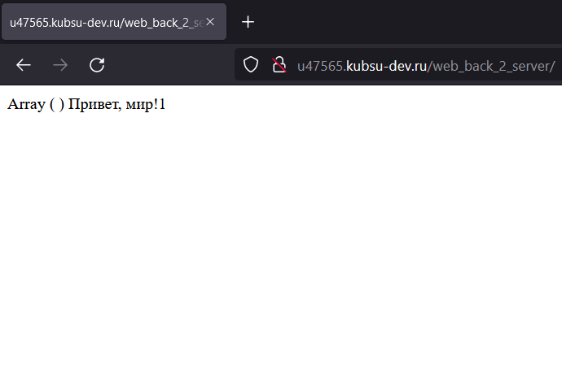
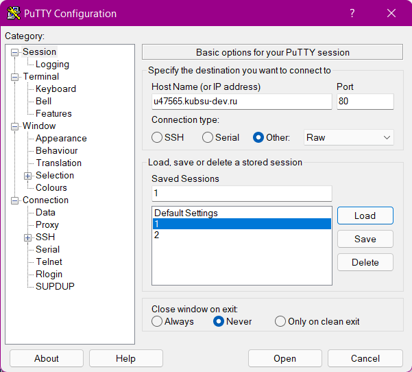
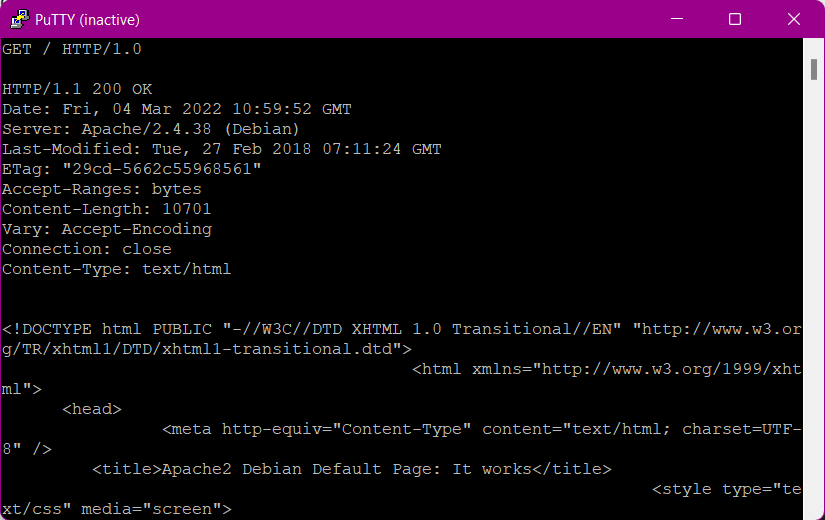
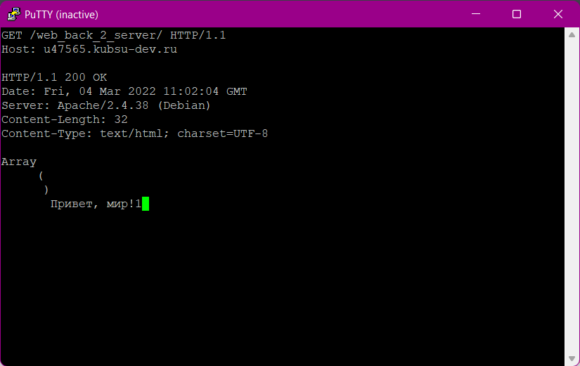
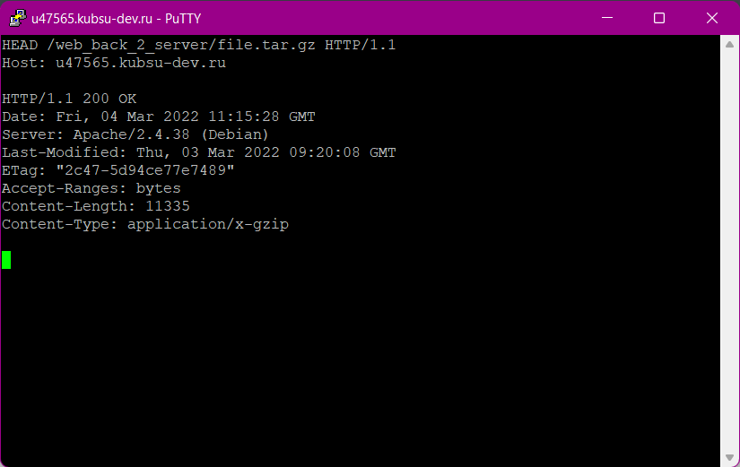
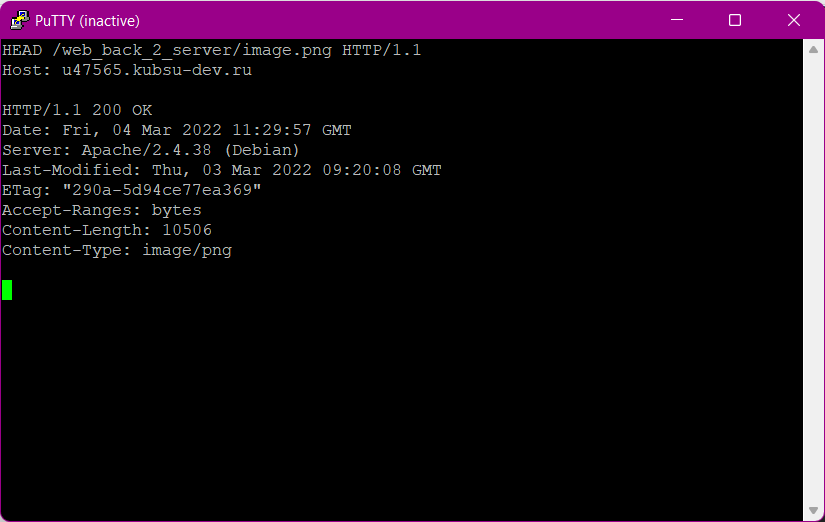

Загрузил файлы задания на сервер и сделал их доступным для чтения.
Подключаюсь через PuTTY, используя Raw по адресу u47565.kubsu-dev.ru с портом 80.
Получаю главную страницу методом GET в протоколе HTTP 1.0. По умолчанию главаная страница - это файл с названием index.
Получаю внутреннюю страницу методом GET в протоколе HTTP 1.1. По умолчанию главаная страница - это файл с названием index. Сервер вернул файл index.php. Для HTTP 1.1 появился заголовок Host.
Чтобы получить информацию о файле (метаданные) использую метод HEAD, который не возвращает тело объекта. В данном случае нас интересует размер, смотрим на строчку Content-Length. Размер файла измеряется в байтах. В нашем случае размер файла file.tar.gz равен 11335 Байтам.
Медиа тип (так же известный как Internet Mail Extensions или MIME тип) является стандартом, который описывает природу и формат документа, файла или набора байтов. Аналогично предыдущему скриншоту, обращаюсь к файлу image.png В данном случае нас интересует медиатип, смотрим на строчку Content-Type. Медиатип ресурса: image/png
